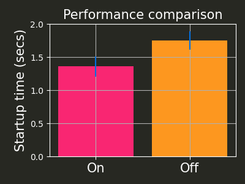

Emacs initialization
Table of Contents
- 1. Startup
- 2. Package management
- 3. use-package
- 4. Constants
- 5. Custom functions
- 6. User interface
- 7. Magit
- 8. Undo
- 9. Auto complete
- 10. Git modes
- 11. Helm
- 12. Spelling
- 13. Org
- 14. LaTeX
- 15. Python
- 16. Keybindings
- 17. Hooks
- 18. Completed Emacs.org setup
1 Startup
Make startup faster by reducing the frequency of garbage collection and then use a hook to measure Emacs startup time.
1.1 Performance
;; The default is 800 kilobytes. Measured in bytes. ;; Seems to have an effect, see plot below. (setq gc-cons-threshold (* 50 1000 1000)) ;; Profile emacs startup (add-hook 'emacs-startup-hook (lambda () (message "Emacs loaded in %s with %d garbage collections." (format "%.2f seconds" (float-time (time-subtract after-init-time before-init-time))) gcs-done)))
I ran a quick test to check if the above code actually makes a difference.
On: means gc-cons-threshold is set (above), and
Off: means gc-cons-threshold is the default value.
The trials were executed on a PC running Ubuntu 20.04, with a 16-core Intel(R) Core(TM) i9-9900KF CPU @ 3.60GHz.
| Off (secs) | On (secs) |
| 2.03 | 1.67 |
| 1.67 | 1.29 |
| 1.73 | 1.28 |
| 1.67 | 1.28 |
| 1.66 | 1.28 |
import numpy import matplotlib.pyplot as plt off = numpy.array([d[0] for d in data[1:]]) on = numpy.array([d[1] for d in data[1:]]) means = [on.mean(), off.mean()] stds = [on.std(), off.std()] fig, ax = plt.subplots(figsize=(4, 3), facecolor='#272822', tight_layout=True) ax.bar([0, 1], means, yerr=stds, ecolor='#006FE0', color=['#F92672', '#FD971F']) ax.set_title('Performance comparison', color='white', fontsize=15) ax.set_xticks([0, 1]) ax.set_xticklabels(['On', 'Off'], fontsize=15) ax.set_ylim(0, 2) ax.set_facecolor('#272822') ax.spines['right'].set_color('white') ax.spines['left'].set_color('white') ax.spines['bottom'].set_color('white') ax.spines['top'].set_color('white') ax.tick_params(axis='x', colors='white') ax.tick_params(axis='y', colors='white') ax.set_ylabel('Startup time (secs)', color='white', fontsize=15) ax.grid() plt.savefig('imgs/startup-performance.png', facecolor=fig.get_facecolor())

Figure 1: Startup duration comparison between default gc-cons-threshold (Off) and value set above (On).
1.2 Export Emacs.org to HTML
Automatically export Emacs.org to HTML after save.
(defun org-html-export-to-html-for-emacs-init () "When current buffer is Emacs.org, export to HTML" (when (string= (buffer-file-name) (expand-file-name "Emacs.org" user-emacs-directory)) (message "Generating Emacs.html") (org-html-export-to-html))) (add-hook 'after-save-hook 'org-html-export-to-html-for-emacs-init)
1.3 Finished startup
(message "[INIT] successfully completed startup setup")
2 Package management
(require 'package) (setq package-archives '( ("melpa" . "https://melpa.org/packages/") ;; ("melpa-stable" . "https://stable.melpa.org/packages/") ;; ("org" . "https://orgmode.org/elpa/") ("elpa" . "https://elpa.gnu.org/packages/") )) (package-initialize) (message "[INIT] successfully setup package managers")
3 use-package
(unless (package-installed-p 'use-package) (package-refresh-contents) (package-install 'use-package)) (eval-when-compile (require 'use-package)) (message "[INIT] successfully setup use-package")
4 Constants
(setq ;; full name of the user logged in user-full-name "Christopher E. Mower" ;; file used for storing customization information. custom-file (concat user-emacs-directory "/custom.el") ;; application that opens pdf documents pdf-open-application (cond ((string-equal system-type "gnu/linux") "evince") ((string-equal system-type "darwin") "open")) ;; default user directory for storing custom theme files custom-theme-directory "~/.emacs.d/themes" ;; number of lines of margin at the top and bottom of a window scroll-margin 5 ;; the number of lines to try scrolling a window by when point moves out scroll-step 1 ;; The day of the week on which a week in the calendar begins ;; 0 means Sunday (default), 1 means Monday, and so on calendar-week-start-day 1 ;; inhibit the startup screen inhibit-splash-screen t ;; default dictionary to use ispell-dictionary "en_US" ;; fontify subscript and superscript strings font-latex-fontify-script nil ;; control use of local variables in files you visit ;; :safe means set the safe variables, and ignore the rest enable-local-variables :safe ;; output type to be used by htmlize when formatting code snippets org-html-htmlize-output-type 'css ;; List of warnings that the byte-compiler should issue ;; The 'cl' package is now officially deprecated in favor of 'cl-lib'. byte-compile-warnings '(cl-functions) ) (message "[INIT] set constants")
4.1 Resources
- https://stackoverflow.com/a/1817318/4650592
- https://www.reddit.com/r/emacs/comments/6dqap5/how_to_keep_initel_clean_if/
- https://emacs.stackexchange.com/a/59811/30155
- https://tex.stackexchange.com/a/74373
- https://emacs.stackexchange.com/a/38
- https://www.gnu.org/savannah-checkouts/gnu/emacs/news/NEWS.27.1
- https://github.com/kiwanami/emacs-epc/issues/35#issuecomment-660639327
5 Custom functions
(defun open-init-file () "Open Emacs init file." (interactive) (find-file (expand-file-name "Emacs.org" user-emacs-directory))) (defun report-init-stage (str) (message (concat "[INIT] " str))) (report-init-stage "successfuly setup custom functions")
6 User interface
6.1 Theme
;; (load-theme 'spacegray t) (load-theme 'monokai t) (report-init-stage "successfully setup emacs theme")
6.2 Appearance
(scroll-bar-mode 0) ;; remove scroll bar (tool-bar-mode 0) ;; remove tool bar (menu-bar-mode 0) ;; remove menu bar (show-paren-mode 1) ;; highlight parentheses (global-hl-line-mode 1) ;; highlight current line (global-linum-mode 1) ;; show line numbers (report-init-stage "successfully setup appearance")
7 Magit
https://magit.vc/manual/magit/
(use-package magit :ensure t) ;; Custom functions for opening GitHub from magit (defun parse-github-url (url) "convert a git remote location as a HTTP URL" (if (string-match "^http" url) url (replace-regexp-in-string "\\(.*\\)@\\(.*\\):\\(.*\\)\\(\\.git?\\)" "https://\\2/\\3" url))) (defun magit-open-repo () "open remote repo URL" (interactive) (let ((url (magit-get "remote" "origin" "url"))) (progn (browse-url (parse-github-url url)) (message "Opening %s" url)))) (add-hook 'magit-mode-hook (lambda () (local-set-key (kbd "o") 'magit-open-repo))) (report-init-stage "successfully setup magit")
8 Undo
(use-package undo-tree :ensure t :init (setq undo-tree-visualizer-diff t) :config (global-undo-tree-mode)) (report-init-stage "successfully setup undo-tree")
9 Auto complete
(use-package auto-complete :commands auto-complete-mode :init (setq ac-delay 0.02 ac-use-menu-map t ac-menu-height 50 ac-use-quick-help nil ac-ignore-case nil ac-dwim t ac-fuzzy-enable t) :config (auto-complete-mode t) (ac-config-default))
10 Git modes
(use-package git-modes :ensure t)
11 Helm
(use-package helm :ensure t :bind (("M-x" . helm-M-x) ("C-x C-f" . helm-find-files)))
12 Spelling
;; Enable flyspell (add-hook 'org-mode-hook '(lambda () (flyspell-mode))) (add-hook 'LaTeX-mode-hook '(lambda () (flyspell-mode))) ;; Use right-mouse button to correct spelling (eval-after-load "flyspell" '(progn (define-key flyspell-mouse-map (kbd "<mouse-3>") #'flyspell-correct-word)))
13 Org
13.1 Constants
(setq ;; default location to look for Org files org-directory "~/Dropbox/org" ;; font-lock should hide the emphasis marker characters org-hide-emphasis-markers t ;; turn on org-indent-mode on startup. org-startup-indented t ;; insert state change notes and time stamps into a drawer org-log-into-drawer t ;; information to record when a task moves to the DONE state. org-log-done t ;; default target for storing notes org-default-notes-file (concat org-directory "/quick.org") ;; name of the command for executing Python code. org-babel-python-command "python3" ;; commands to process a LaTeX file to a PDF file org-latex-pdf-process '("pdflatex -shell-escape -interaction nonstopmode -output-directory %o %b" "bibtex %b" "makeindex %b" "pdflatex -shell-escape -interaction nonstopmode -output-directory %o %b" "pdflatex -shell-escape -interaction nonstopmode -output-directory %o %b") ;; sorting structure for the agenda items of a single day org-agenda-sorting-strategy '((agenda habit-down time-up priority-down effort-up category-keep) (todo priority-down effort-up category-keep) (tags priority-down effort-up category-keep) (search category-keep)) ;; don’t show deadlines when the corresponding item is done org-agenda-skip-deadline-if-done t ;; don’t show scheduled items in agenda when they are done org-agenda-skip-scheduled-if-done t ;; custom commands for the agenda org-agenda-custom-commands '( ;; view completed tasks today ("D" "Daily review" tags "+CLOSED>\"<-0d>\"/DONE") ;; view completed tasks during past week ("W" "Weekly review" tags "+CLOSED>\"<-7d>\"/DONE") ;; view completed tasks during past two weeks ("R" "Fortnightly review" tags "+CLOSED>\"<-14d>\"/DONE") ;; view completed tasks during past month ("N" "Monthly review" tags "+CLOSED>\"<-1m>\"/DONE") ;; view TODO items without a timestamp ("U" "Unscheduled TODO" ((todo "" ((org-agenda-overriding-header "\nUnscheduled TODO") (org-agenda-skip-function '(org-agenda-skip-entry-if 'timestamp))))))) ;; list of TODO entry keyword sequences and their interpretation org-todo-keywords '((sequence "TODO(t)" "|" "DONE(d)") (sequence "TODAY(o)" "|" "CANCELED(c)")) ;; faces for specific TODO keywords org-todo-keyword-faces '(("TODO" . (:foreground "#ffb347" :weight bold)) ("DONE" . (:foreground "#037d50")) ("TODAY" . (:foreground "#add8e6" :weight bold)) ("CANCELED" . (:foreground "red"))) ;; external applications for opening ‘file:path’ items in a document org-file-apps (cond ((string-equal system-type "gnu/linux") '((auto-mode . emacs) ("\\.mm\\'" . default) ("\\.x?html?\\'" . default) ("\\.pdf\\'" . "evince %s"))) ((string-equal system-type "darwin") '((auto-mode . emacs) ("\\.mm\\'" . default) ("\\.x?html?\\'" . default) ("\\.pdf\\'" . "open %s")))) ;; how the source code edit buffer should be displayed org-src-window-setup 'current-window )
13.2 Org files
;; Add all .org files in org-directory recursively (load-library "find-lisp") (setq org-agenda-files (find-lisp-find-files org-directory "\.org$")) ;; Include .emacs.d (add-to-list 'org-agenda-files "~/.emacs.d")
13.2.1 Resources
13.3 Auto-complete
;; Org mode (use-package org-ac :ensure t :config (org-ac/config-default))
13.4 Appearance
;; org-appear mode (use-package org-appear :ensure t :after org :init (setq org-appear-autolinks t) :hook (org-mode . org-appear-mode)) ;; org-superstar (use-package org-superstar :ensure t :after org :hook (org-mode . org-superstar-mode) :custom (org-superstar-headline-bullets-list '("◉" "●" "○" "▣" "■" "□" "▶" "▷")))
13.5 org-babel
(org-babel-do-load-languages 'org-babel-load-languages '((shell . t) (python . t)))
13.6 org-ref
(use-package org-ref :ensure t :init (setq org-ref-bibliography-notes "~/Dropbox/org/reading.org" org-ref-default-bibliography '("~/Dropbox/org/bib/bib.bib")))
Note, when writing \(\LaTeX\) equations, the standard environment to use is
\begin{equation}
E = mc^2
\end{equation}
however, when writing \(\LaTeX\) in Org-mode files, use
#+begin_export latex E = mc^2 #+end_export
13.7 org-super-agenda
13.7.1 Preliminary setup
The following date indicators are required in the org-super-agenda setup in the next section.
;; Return day of week: Sun=0, Mon=1, Tues=2, ..., Sat=6 (defun get-day-from-now (n) (-let* (((sec minute hour day month year dow dst utcoff) (decode-time (+ (* n 86400) (float-time))))) dow)) ;; dow <=> day-of-week ;; Get day of week today (setq day-of-week-today (get-day-from-now 0)) ;; Get day of week end (-let* (((sec minute hour day month year dow dst utcoff) (decode-time (+ (* (- 8 day-of-week-today) 86400) (float-time))))) (setq org-end-of-week (format "%d-%02d-%02d" year month day))) ;; Get day of week soon date (i.e. 4 days) (-let* (((sec minute hour day month year dow dst utcoff) (decode-time (+ (* 4 86400) (float-time))))) ;; 4 days (setq org-soon-date (format "%d-%02d-%02d" year month day))) ;; Get day of week tomorrow date (-let* (((sec minute hour day month year dow dst utcoff) (decode-time (+ (* 2 86400) (float-time))))) ;; 2 days (setq org-tomorrow-date (format "%d-%02d-%02d" year month day)))
13.7.2 Main org-super-agenda configuration
(use-package org-super-agenda :ensure t :config (org-super-agenda-mode t) (setq org-super-agenda-groups `((:name "Today" :time-grid t) (:name "Scheduled" :scheduled past) (:name "Overdue reading" :and (:deadline past :tag "reading")) (:name "Overdue" :deadline past) (:name "Scheduled Today" :todo "TODAY") (:name "Read by today" :and (:deadline today :tag "reading")) (:name "Watch today" :and (:deadline today :tag "watch")) (:name "By today" :deadline today) (:name "Read tomorrow" :and (:deadline (before ,org-tomorrow-date) :tag "reading")) (:name "By tomorrow" :deadline (before ,org-tomorrow-date)) (:name "Read by EOW" :and (:deadline (before ,org-end-of-week) :tag "reading")) (:name "Watch by EOW" :and (:deadline (before ,org-end-of-week) :tag "watch")) (:name "By EOW" :deadline (before ,org-end-of-week)) (:name "Reading" :tag "reading"))))
13.8 Finished Org
(report-init-stage "successfully setup Org")
14 LaTeX
;; AucTeX (use-package auctex :defer t :ensure t :init (setq TeX-show-compilation 1)) (use-package auctex-latexmk :defer t :ensure t :config (progn (auctex-latexmk-setup) (setq auctex-latexmk-inherit-TeX-PDF-mode t))) ;; Add custom command to compress pdf (eval-after-load "tex" '(add-to-list 'TeX-command-list '( "Compress" "python $HOME/Dropbox/Documents/myscripts/my_python_scripts/pdfcompress.py %s.pdf" TeX-run-shell nil t :help "Compresses PDF.") t)) (report-init-stage "successfully setup latex")
15 Python
;; Keybindings for indent left/right (add-hook 'python-mode-hook '(lambda () (local-set-key (kbd "C-.") 'python-indent-shift-right))) (add-hook 'python-mode-hook '(lambda () (local-set-key (kbd "C-,") 'python-indent-shift-left))) ;; Auto completion (use-package jedi :ensure t :init (setq jedi:complete-on-dot t jedi:tooltip-method nil jedi:get-in-function-call-delay 1) :config (add-hook 'python-mode-hook 'jedi:setup))
15.1 TODO Investigate Jedi auto-completion for Emacs
15.2 Resources
16 Keybindings
;; Org (global-set-key (kbd "C-c l") 'org-store-link) (global-set-key (kbd "C-c a") 'org-agenda) (global-set-key (kbd "C-c c") 'org-capture) ;; Init file (global-set-key (kbd "C-c i") 'open-init-file)
17 Hooks
;; remove any trailing whitespace on save (add-hook 'after-save-hook 'delete-trailing-whitespace)
18 Completed Emacs.org setup
(report-init-stage "finished Emacs.org setup")